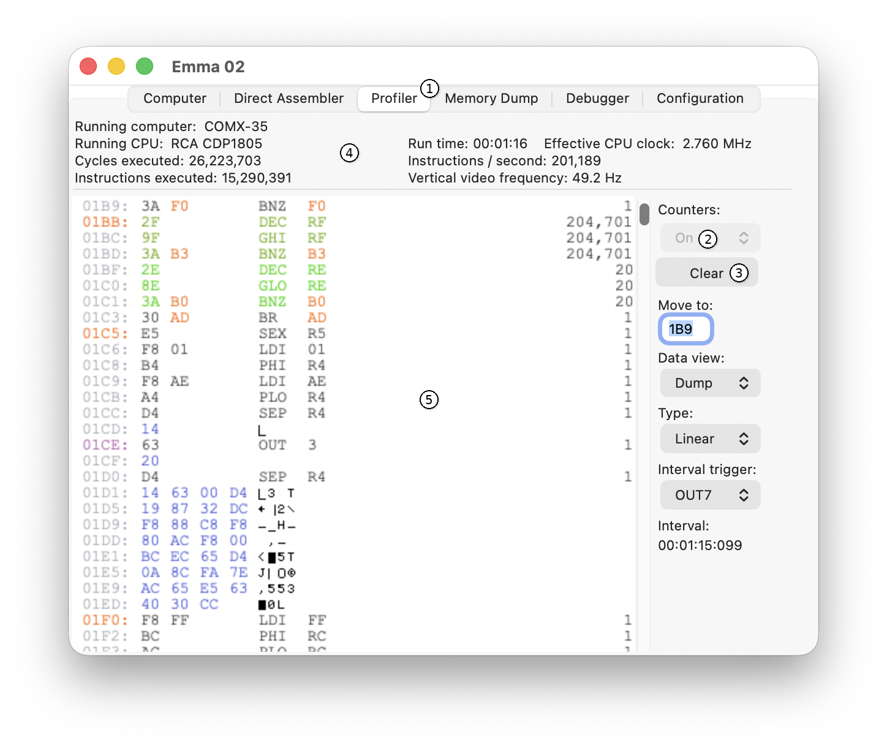
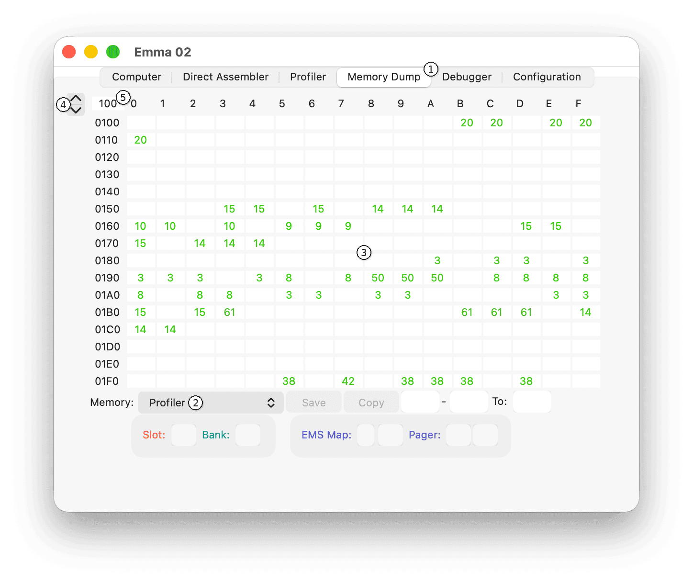

The main purpose of this tab is to identify code hotspots, dead code, coverage statistics, and perform timing analysis of the running computer and CPU.
The main elements of the Profiler tab are shown in the screenshot below.

To open this tab, select the Profiler tab (1).
Note: The profiler only runs and displays active data when emulation is running.
Before starting an emulator, the profiler can be disabled using the Counters On/Off selector (2). During runtime, the Counters Clear button (3) resets all counters to 0.
The top part (4) shows the following timing details:
The bottom left part (5) shows the profiler, which can be used for the following purposes:
On the Profiler tab only a small number of locations are shown at any one time. To scan through memory more quickly, the profiler on the Memory Dump tab can be used:

Profiler
To select the Memory Dump profiler, first select the Memory Dump tab (1) and then choose Profiler (2) as the Memory option.
A total of 256 addresses are shown (3), each containing one counter value between 1 and 255. The colour scheme is the same as on the Profiler tab. Instructions executed more frequently are shown in a deeper red colour.
The displayed counter uses the same logarithmic scale as the colour definition. The colour is calculated using a logarithmic scale.
To change to the previous or next page, use the spin buttons (4). Alternatively, specify an address (5).
For additional details about the Memory Dump tab, see the Memory Dump section.
Further details are available in the following sub-sections: